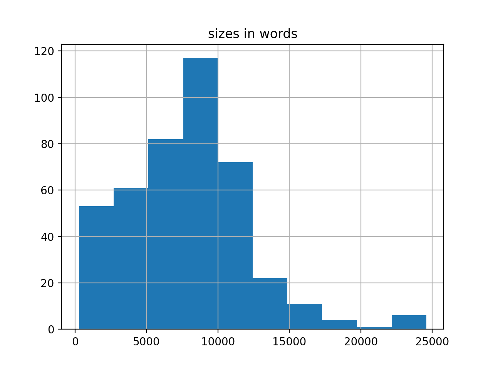
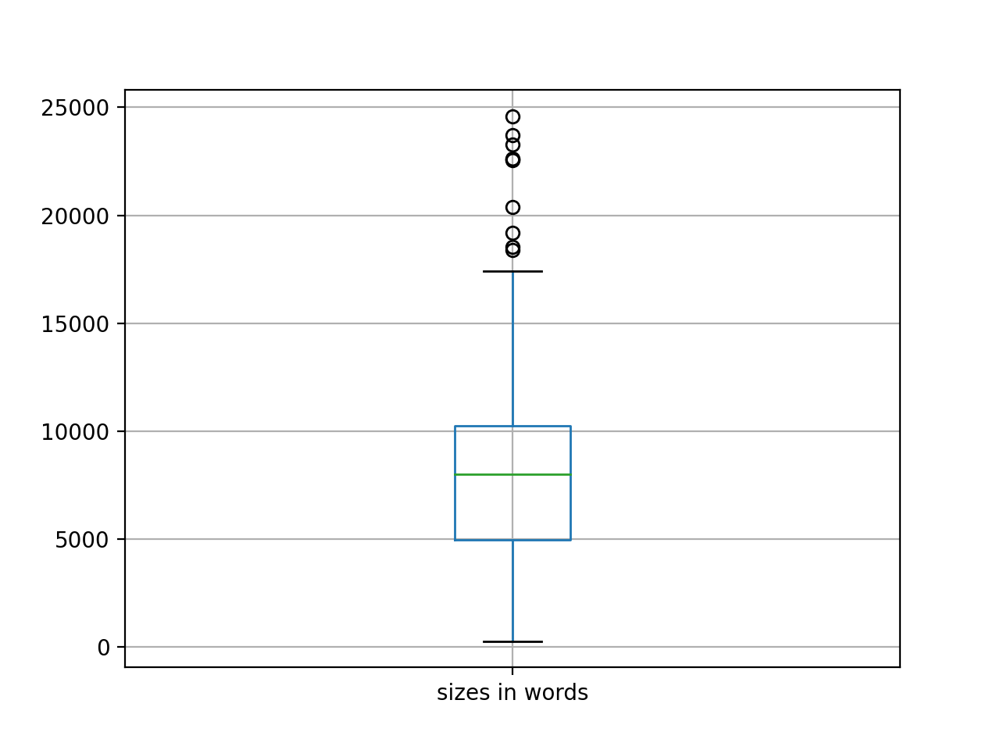
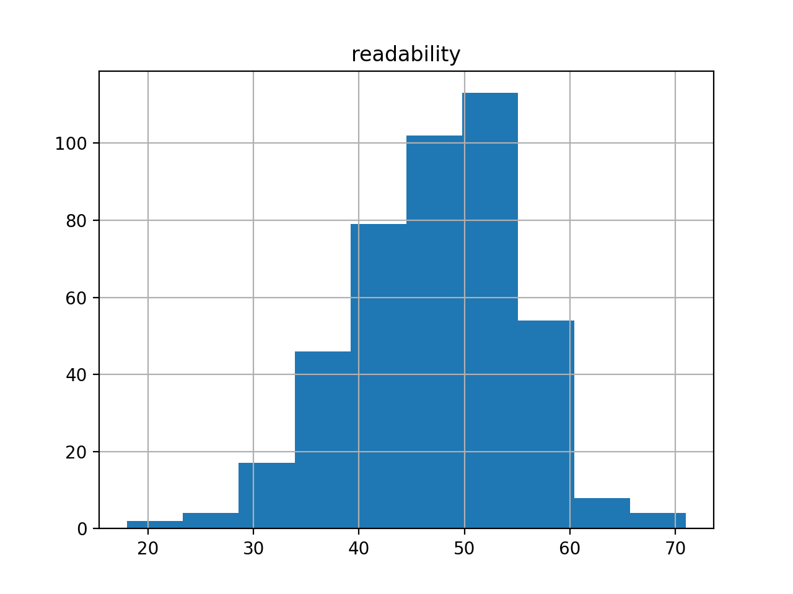
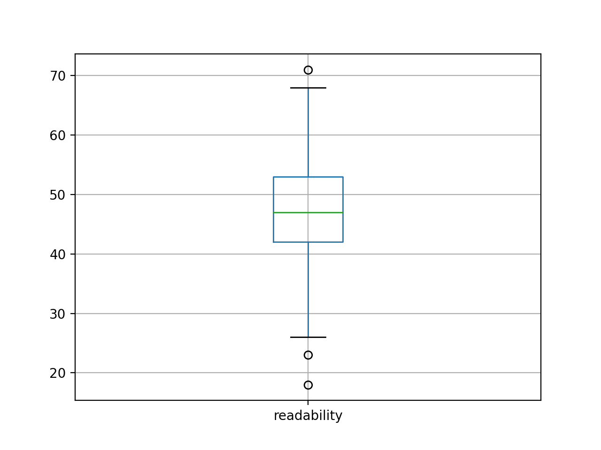
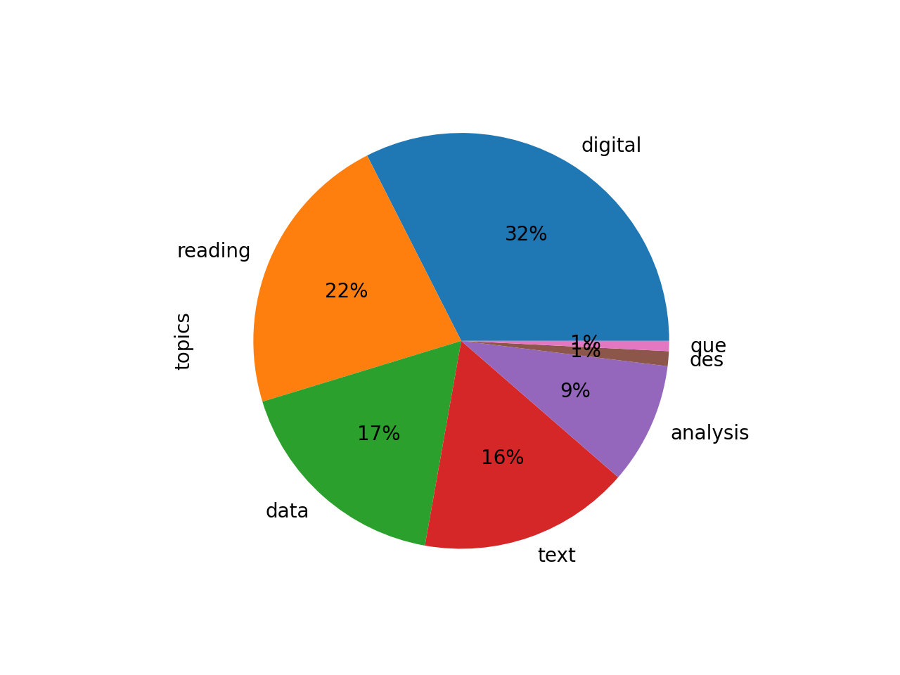
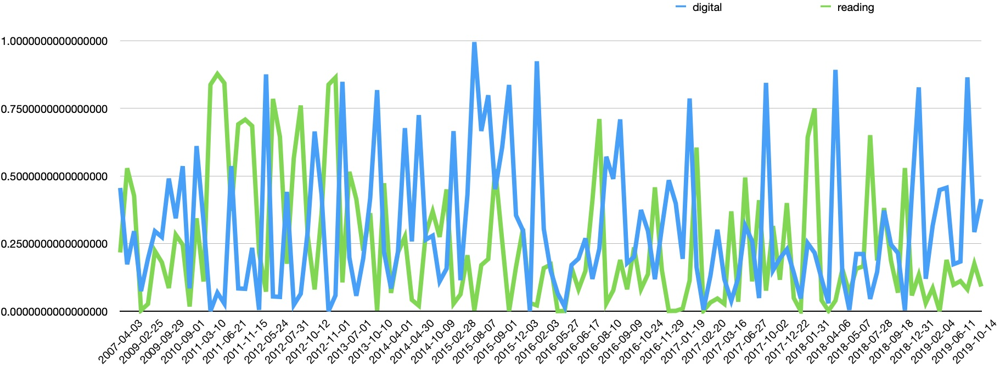
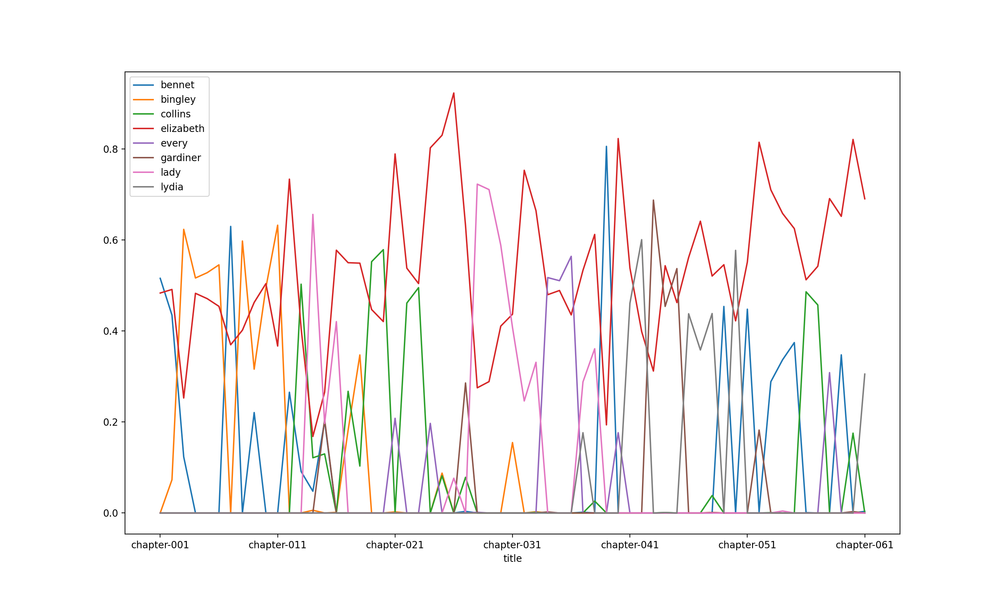
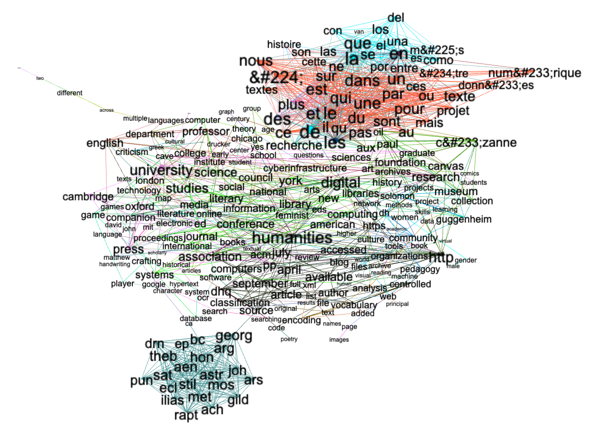

Use cases¶
analyzing Web Of Science¶
reading collections from the HathiTrust¶
analyzing open access articles¶
creating a carrel from email messages¶
reading an entire blog¶
Reading DHQ¶
I did some rudimentary analysis (“reading”) against the whole of Digital Humanities Quarterly (DHQ), and this use case outlines what I’ve learned so far.
First of all, extents. The corpus numbers about 400 articles, for a total of 3.3 million words. Moby Dick is .2 million words long, and consequently the whole of DHQ is equal to about sixteen Moby Dicks. The average readability (Flesh) score for the corpus is 47. Shakespeare’s sonnets measure about 90 (easy). Most scholarly journal articles – in my experience – have a score around 70. Something is unusual here.
   Second, I created a rudimentary bibliography, and it is complete with computed summaries and computed keywords. The frequencies of the keywords can be illustrated as a word cloud. After removing dominate keywords like “digital”, and “humanties”, the cloud is interesting.
Third, after doing quick & dirty topic modeling with seven topics, the topics come out to be the following:
topics weights features
digital 0.52049 digital humanities research students work proj...
reading 0.35646 reading digital new media literary literature ...
data 0.28013 data information research design visualization...
text 0.26300 text digital texts work textual new archive pr...
analysis 0.15128 analysis text words data texts results also word
des 0.01854 des les dans une par qui que est
que 0.01266 que los las del una para por como
Transforming the result into a pie chart illustrates how no theme dominates. Plotting the two most significant topics (“digital” and “reading”) over time emphasizes the point; themes ebb & flow to a great degree; the journal does not manifest a single, over-arching theme.
 Compare this with Pride And Prejudice, and one can see how the theme “Elizabeth” (the red line) is an over-arching theme.
I tried to model collocations in the form of a network graph, but the model did not turn out very well, but the result – just like the topic modeling – illustrates the existence of non-English words and a number of TEI elements in the texts. This needs to be improved.
I could have done some semantic indexing analysis, but I don’t know how to visualize the result, yet.
Such is what I learned so far, and further investigation would require more specific questions from domain experts – people who have a vested interest in the Quarterly. ‘Got questions?
Fun with text mining.